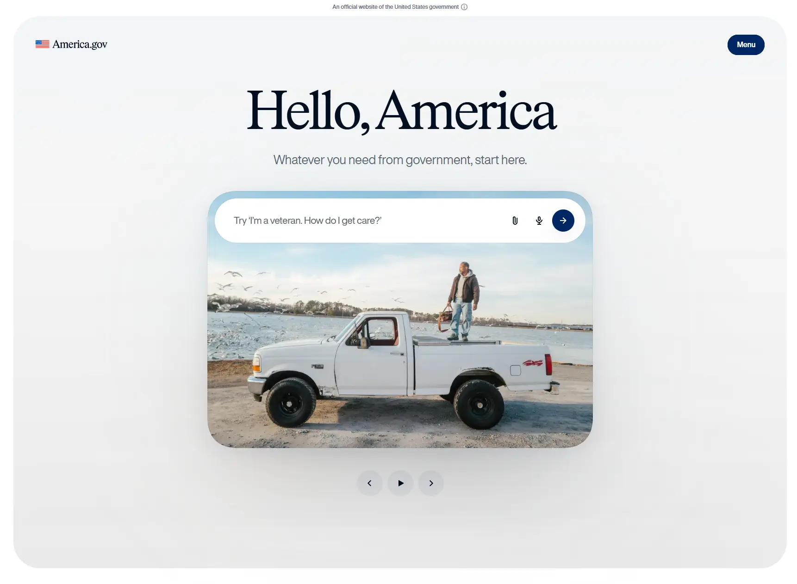

America.gov
- Веб-приложение
- Сервисы и приложения
- НКО и социальные проекты
- ИИ-сервисы
- Госпроект
- Обычным пользователям
- Минимализм
- Светлая тема
- Нейтральный фон
- Интерфейс-диалог
- Переходы между страницами
- Astro
- View Transitions API
- Cloudflare
- Микроразметка JSON-LD
- Мультиязычный сайт
- США
- Действующий сайт

Что это
Официальный сервис правительства США: вместо десятков сайтов ведомств — одно поле, куда вопрос пишут обычными словами. Поиск на ИИ отвечает по официальным источникам, со ссылками на первоисточник, без рекламы и регистрации. Сделан для жителей страны: паспорт, Medicare, смена фамилии, поиск работы. Сдержанный функциональный сайт правительства США, который сводит 29 тысяч госсайтов в одну строку ИИ-поиска.
Что смотреть в первую очередь
Начните с главного экрана: наберите свой вопрос или пролистайте примеры, затем откройте «How it works» — там коротко объяснено, откуда берутся ответы и почему им можно верить.
Приёмы
- Интерфейс-диалог
- Переходы между страницами
Интересные факты
- Главная — почти пустой лист: огромный заголовок «Hello, America», подпись «Whatever you need from government, start here» и единственное поле ввода; меню, темы и языки спрятаны за кнопкой «Menu» в правом верхнем углу.
- Под полем — строка «29,000 websites into one»: сайт сам называет цифру 29 тысяч объединённых госсайтов; рядом обещания «Clear answers. Official sources.», «No app to download.» и «America.gov keeps your data private.».
- Ищет ответы система, которую здесь называют SI (Super Intelligence): по странице «How it works» она объясняет информацию только с официальных госсайтов и даёт ссылку на первоисточник; подача заявлений и отслеживание статуса прямо в чате обещаны в 2027 году.
- Под поиском крутится карусель из 10 бытовых примеров — Medicare, паспорт ребёнку, поиск работы, смена фамилии после свадьбы; у каждого своя фотография, а подписи «Example 9 of 10» читают экранные дикторы.
- Статус и авторство указаны прямо: сверху плашка «An official website of the United States government», в подвале — General Services Administration, National Design Studio и языки English/Français/Español; запуск — 29 сентября 2026 года после указа Executive Order 14338.
Паспорт
- Домен
- america.gov
- Тип сайта
- Веб-приложение
- Категории
- Сервисы и приложения, НКО и социальные проекты
- Подкатегории
- ИИ-сервисы, Госпроект
- Для кого
- Обычным пользователям
- Стиль
- Минимализм
- Язык
- Мультиязычный, Английский, Французский
- Страна
- США, Вашингтон
- Автор
- National Design Studio (GSA)
- Год
- 2026
- Добавлен в коллекцию
- 02.11.2026
Палитра
-
#F2F3F3— 80% кадра -
#CCD3D2— 8% кадра -
#B0B2B2— 3% кадра -
#99948C— 2% кадра -
#10161C— 2% кадра
- Режим
- Светлая
- Цвет фона
- Нейтральный
Технологии
- Astro
- View Transitions API
- Cloudflare
- Микроразметка JSON-LD
- Самопостинг шрифтов
- Своя дизайн-система